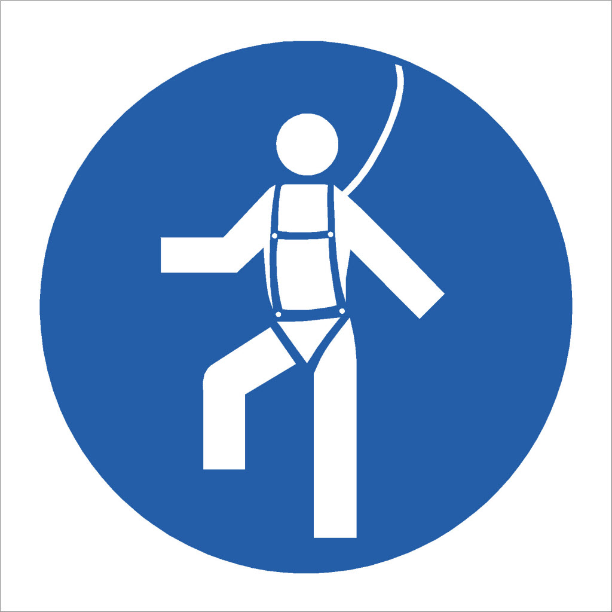
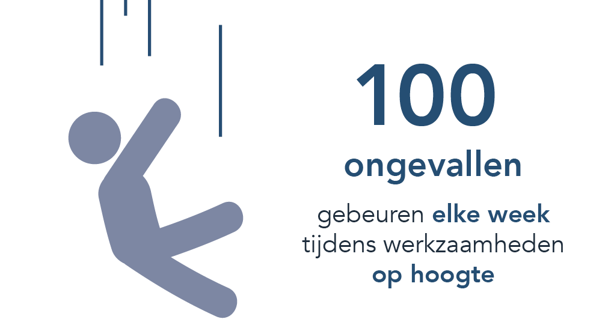

Valbeveiliging beschermt je tegen het vallen van hoogtes. Een correct valbeveiligingssysteem bestaat uit, 1. Een verankeringsmiddel 2. Een verbindingssysteem (veilidheidslijnen) 3. Een valbeveiligingsharnas

Risico's,
Het grootste risico bij het gebruiken van valbeveiliging is verkeerd gebruik. Dit kan leiden tot letsel aan de gebruiker denk hierbij aan, 1. Het harnas verkeerd aantrekken 2. Het harnas verkeerd verbinden met de leeflijn 3. Niet-compatibele onderdelen gebruiken 4. De valdiepte verkeerd inschatten Een harnas verkeerd aantrekken kan ernstige verwondingen veroorzaken aan de rug, de borstkas en voor mannen ter hoogte van de testikels.

Hieronder nog een video over de gevaren van het werken op hoogte gemaakt door het arboportaal,